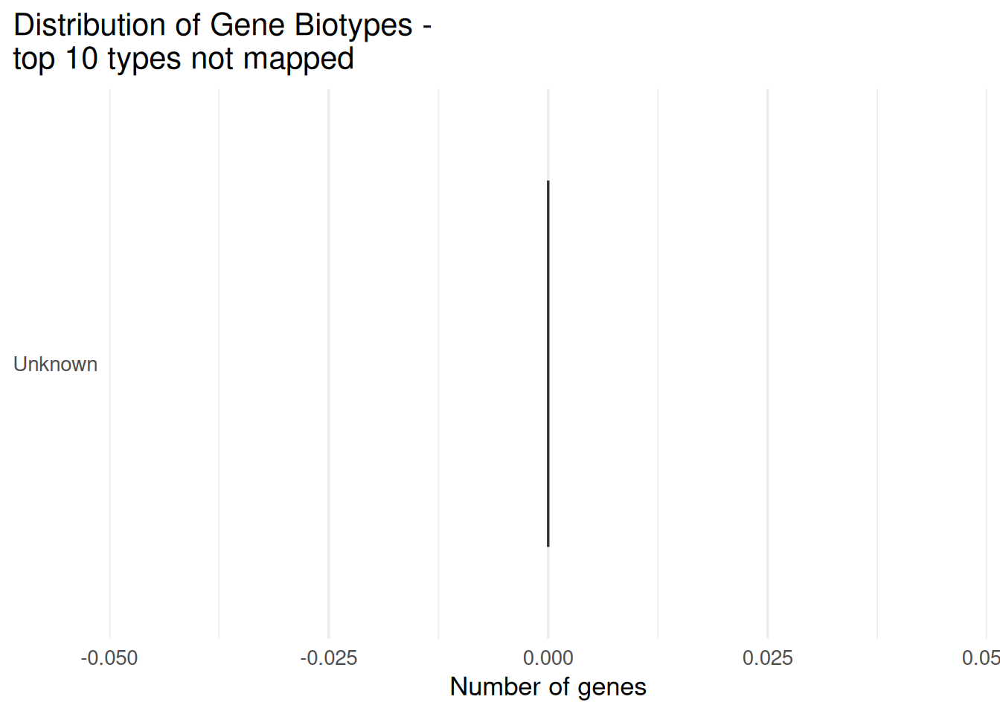

Chapter 5 Worked examples with before/after tables
This chapter shows what the data look like, what the IDs look like, and how the table changes once mapped.
##
## Attaching package: 'dplyr'## The following objects are masked from 'package:stats':
##
## filter, lag## The following objects are masked from 'package:base':
##
## intersect, setdiff, setequal, unionlibrary(tibble)
library(biomaRt)
kable_head <- function(x, n = 5, caption = NULL) {
knitr::kable(utils::head(x, n), caption = caption)
}
strip_ensembl_version <- function(x) sub("\\..*$", "", x)
connect_ensembl <- function() {
mirrors <- c("www", "useast", "uswest", "asia")
for (m in mirrors) {
mart <- tryCatch(
biomaRt::useEnsembl(
biomart = "genes",
dataset = "hsapiens_gene_ensembl",
mirror = m
),
error = function(e) NULL
)
if (!is.null(mart)) {
return(mart)
}
}
stop("Could not connect to Ensembl using available mirrors.")
}
safe_getBM <- function(attributes, filters, values, mart) {
tryCatch(
getBM(
attributes = attributes,
filters = filters,
values = values,
mart = mart
),
error = function(e) {
message("BioMart query unavailable in this run; using fallback with empty HGNC symbols.")
tibble::tibble(
ensembl_gene_id = as.character(values),
hgnc_symbol = NA_character_
)
}
)
}
cached_hgnc_map <- function(ids, mart, cache_key) {
cleaned <- unique(strip_ensembl_version(ids))
cleaned <- cleaned[grepl("^ENSG", cleaned)]
if (length(cleaned) == 0) {
return(tibble::tibble(ensembl_gene_id = character(), hgnc_symbol = character()))
}
dir.create("cache", showWarnings = FALSE, recursive = TRUE)
cache_file <- file.path("cache", paste0("hgnc_map_", cache_key, ".rds"))
live_map <- tryCatch(
getBM(
attributes = c("ensembl_gene_id", "hgnc_symbol"),
filters = "ensembl_gene_id",
values = cleaned,
mart = mart
),
error = function(e) NULL
)
if (!is.null(live_map)) {
saveRDS(live_map, cache_file)
return(live_map)
}
if (file.exists(cache_file)) {
message("BioMart unavailable; using cached HGNC mapping from ", cache_file)
return(readRDS(cache_file))
}
message("BioMart unavailable and no HGNC cache found; using empty HGNC fallback.")
tibble::tibble(
ensembl_gene_id = as.character(cleaned),
hgnc_symbol = NA_character_
)
}5.1 GSE233947
5.1.1 Raw data preview
## Setting options('download.file.method.GEOquery'='auto')## Setting options('GEOquery.inmemory.gpl'=FALSE)## Using locally cached version of supplementary file(s) GSE233947 found here:
## data/GSE233947/GSE233947_FeatureCounts_V31genes_RawCounts_ENSG.tsv.gz## Using locally cached version of supplementary file(s) GSE233947 found here:
## data/GSE233947/GSE233947_modulize_3CTG_20CTG_junctions.tsv.gz## Using locally cached version of supplementary file(s) GSE233947 found here:
## data/GSE233947/GSE233947_modulize_NT_20CTG_junctions.tsv.gz## Using locally cached version of supplementary file(s) GSE233947 found here:
## data/GSE233947/GSE233947_modulize_NT_3CTG_junctions.tsv.gzpath <- file.path("data", params$gse)
files <- list.files(path, pattern = params$file_grep,
full.names = TRUE, recursive = TRUE)
kable_head(tibble(file = basename(files)), min(10, length(files)), paste(params$gse,": extracted file list (first 10)"))| file |
|---|
| GSE233947_FeatureCounts_V31genes_RawCounts_ENSG.tsv.gz |
| GSE233947_modulize_3CTG_20CTG_junctions.tsv.gz |
| GSE233947_modulize_NT_20CTG_junctions.tsv.gz |
| GSE233947_modulize_NT_3CTG_junctions.tsv.gz |
Raw table preview
library(readr)
safe_read <- function(file) {
# First attempt: read as TSV
df <- tryCatch(
readr::read_tsv(file, show_col_types = FALSE),
error = function(e) NULL # catch fatal errors
)
# If read_tsv failed entirely:
if (is.null(df)) {
message("TSV read failed — reading as space-delimited file instead.")
return(readr::read_table(file, show_col_types = FALSE))
}
# If read_tsv returned but with parsing issues:
probs <- problems(df)
if (nrow(probs) > 0) {
message("Parsing issues detected in TSV — reading as space-delimited file instead.")
return(readr::read_table(file, show_col_types = FALSE))
}
# If everything was fine:
return(df)
}
x <- safe_read(files[1])
kable_head(x[, 1:min(6, ncol(x))], 5, paste(params$gse,": raw table preview"))| Gene | T8657_900CTG_NT | T8658_1150CTG_NT | T8659_1450CTG_NT | T8660_900CTG_20CTG | T8661_1150CTG_20CTG |
|---|---|---|---|---|---|
| ENSG00000108821 | 456397 | 486088 | 608151 | 2012962 | 379186 |
| ENSG00000265150 | 170681 | 299425 | 286295 | 747000 | 210962 |
| ENSG00000164692 | 169781 | 190854 | 263391 | 869194 | 180006 |
| ENSG00000265735 | 78113 | 121697 | 113379 | 532435 | 112977 |
| ENSG00000259001 | 55081 | 78811 | 73032 | 353442 | 100823 |
ID preview
id_col <- names(x)[1]
ids <- x[[1]] |> as.character()
kable_head(tibble(raw_id = head(ids, 10),
stripped = strip_ensembl_version(head(ids, 10))),
10, paste(params$gse,": ID preview"))| raw_id | stripped |
|---|---|
| ENSG00000108821 | ENSG00000108821 |
| ENSG00000265150 | ENSG00000265150 |
| ENSG00000164692 | ENSG00000164692 |
| ENSG00000265735 | ENSG00000265735 |
| ENSG00000259001 | ENSG00000259001 |
| ENSG00000163359 | ENSG00000163359 |
| ENSG00000115414 | ENSG00000115414 |
| ENSG00000168542 | ENSG00000168542 |
| ENSG00000251562 | ENSG00000251562 |
| ENSG00000155657 | ENSG00000155657 |
5.1.2 After mapping (Ensembl → HGNC)
if (any(grepl("^ENSG", strip_ensembl_version(ids)))) {
ensembl_ids <- unique(strip_ensembl_version(ids))
ensembl <- connect_ensembl()
map <- cached_hgnc_map(ids, ensembl, cache_key = params$gse)
kable_head(map, 10, paste(params$gse,": mapping preview"))
expr_mapped <- x %>%
mutate(ensembl_gene_id = strip_ensembl_version(.data[[id_col]])) %>%
left_join(map, by = "ensembl_gene_id") %>%
dplyr::select( ensembl_gene_id,hgnc_symbol, everything())
kable_head(expr_mapped[, 1:min(8, ncol(expr_mapped))], 5, paste(params$gse,": mapped table preview"))
}## BioMart unavailable; using cached HGNC mapping from cache/hgnc_map_GSE233947.rds| ensembl_gene_id | hgnc_symbol | Gene | T8657_900CTG_NT | T8658_1150CTG_NT | T8659_1450CTG_NT | T8660_900CTG_20CTG | T8661_1150CTG_20CTG |
|---|---|---|---|---|---|---|---|
| ENSG00000108821 | COL1A1 | ENSG00000108821 | 456397 | 486088 | 608151 | 2012962 | 379186 |
| ENSG00000265150 | NA | ENSG00000265150 | 170681 | 299425 | 286295 | 747000 | 210962 |
| ENSG00000164692 | COL1A2 | ENSG00000164692 | 169781 | 190854 | 263391 | 869194 | 180006 |
| ENSG00000265735 | RN7SL5P | ENSG00000265735 | 78113 | 121697 | 113379 | 532435 | 112977 |
| ENSG00000259001 | ENSG00000259001 | 55081 | 78811 | 73032 | 353442 | 100823 |
Summarize the mapping
n_ensembl_total <- expr_mapped %>%
distinct(ensembl_gene_id) %>%
nrow()
n_mapped <- expr_mapped %>%
filter(!is.na(hgnc_symbol), hgnc_symbol != "") %>%
distinct(ensembl_gene_id) %>%
nrow()
n_unmapped <- n_ensembl_total - n_mapped
mapping_summary <- tibble::tibble(
category = c("Total Ensembl IDs", "Mapped to HGNC", "Unmapped"),
n = c(n_ensembl_total, n_mapped, n_unmapped)
)
mapping_summary## # A tibble: 3 × 2
## category n
## <chr> <int>
## 1 Total Ensembl IDs 62248
## 2 Mapped to HGNC 40176
## 3 Unmapped 22072unmapped_ids <- expr_mapped %>%
distinct(ensembl_gene_id, hgnc_symbol) %>%
filter(is.na(hgnc_symbol) | hgnc_symbol == "") %>%
pull(ensembl_gene_id) %>%
unique()
length(unmapped_ids)## [1] 22072library(stringr)
unmapped_classified <- tibble::tibble(id = unmapped_ids) %>%
mutate(type = case_when(
str_detect(id, "^ENSG\\d+$") ~ "Ensembl gene ID (ENSG)",
str_detect(id, "^ENSG\\d+\\.\\d+$") ~ "Ensembl gene ID with version (ENSG.x) — needs stripping",
str_detect(id, "^ENST\\d+") ~ "Ensembl transcript ID (ENST) — wrong target for gene mapping",
str_detect(id, "^ENSP\\d+") ~ "Ensembl protein ID (ENSP) — wrong target",
str_detect(id, "^ENS.*G\\d+") ~ "Non-human Ensembl gene (e.g., ENSMUSG...) — wrong organism",
str_detect(id, "^ERCC-") ~ "ERCC spike-in control — not a gene",
str_detect(id, "^MT-|^mt-") ~ "Mitochondrial gene symbol (not Ensembl ID) — different ID system",
str_detect(id, "^\\d+$") ~ "Entrez Gene ID — different ID system",
TRUE ~ "Other / unknown format"
))
unmapped_classified %>% count(type) %>% arrange(desc(n))## # A tibble: 1 × 2
## type n
## <chr> <int>
## 1 Ensembl gene ID (ENSG) 22072# Use the same mart/dataset as your mapping step:
# ensembl <- useMart("ensembl", dataset = "hsapiens_gene_ensembl")
ensg_details <- safe_getBM(
attributes = c(
"ensembl_gene_id",
"gene_biotype",
"external_gene_name"
),
filters = "ensembl_gene_id",
values = unmapped_ids,
mart = ensembl
)## BioMart query unavailable in this run; using fallback with empty HGNC symbols.## # A tibble: 6 × 2
## ensembl_gene_id hgnc_symbol
## <chr> <chr>
## 1 ENSG00000265150 <NA>
## 2 ENSG00000259001 <NA>
## 3 ENSG00000269900 <NA>
## 4 ENSG00000270066 <NA>
## 5 ENSG00000130723 <NA>
## 6 ENSG00000262202 <NA>Output the distribution of biotypes for the subset of ensembl ids that have no HGNC ID.
library(ggplot2)
if (!"gene_biotype" %in% names(ensg_details) || nrow(ensg_details) == 0) {
df_counts <- data.frame(
biotype = "Unknown",
n = 0,
stringsAsFactors = FALSE
)
} else {
x <- ensg_details$gene_biotype
x[is.na(x)] <- "Unknown"
tab <- table(x)
df_counts <- data.frame(
biotype = names(tab),
n = as.integer(tab),
stringsAsFactors = FALSE
)
df_counts <- df_counts[order(df_counts$n, decreasing = TRUE), ]
df_counts <- df_counts[1:min(10, nrow(df_counts)), ]
}
df_counts$biotype <- factor(df_counts$biotype, levels = df_counts$biotype)
ggplot(df_counts, aes(x = biotype, y = n, fill = biotype)) +
geom_col(width = 0.8, color = "grey20") +
coord_flip() +
scale_fill_brewer(palette = "Set3", guide = "none") +
labs(
x = NULL, y = "Number of genes",
title = "Distribution of Gene Biotypes - \ntop 10 types not mapped"
) +
theme_minimal(base_size = 13) +
theme(
plot.title.position = "plot",
panel.grid.major.y = element_blank()
)
Would the mapping of these identifiers have been different if we used a different version of Ensembl?